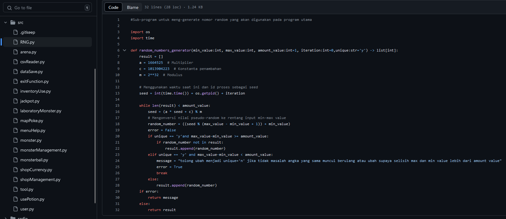
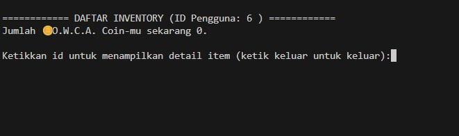
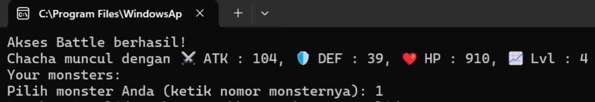
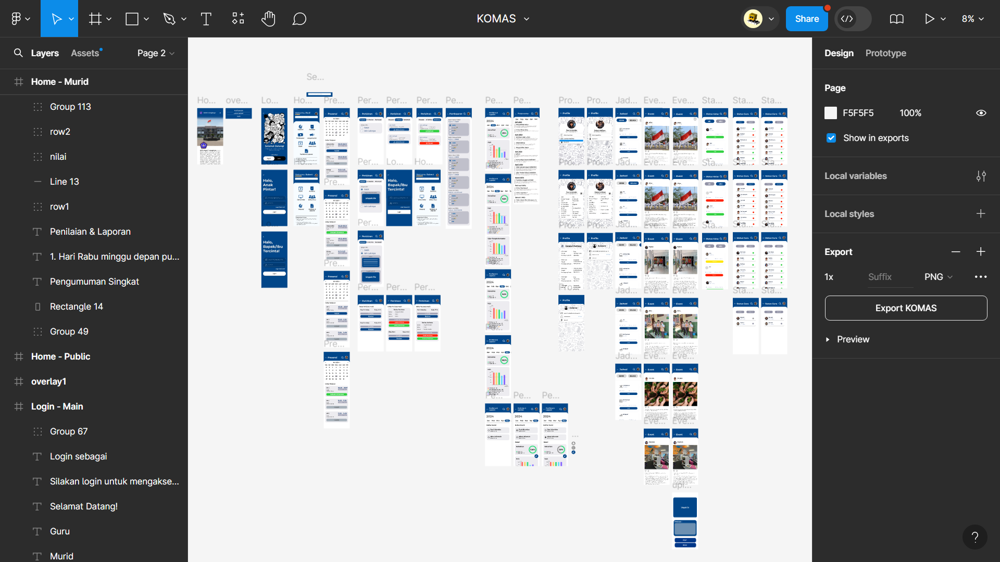
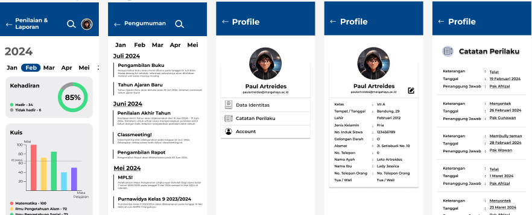

🛠️ Projects
O.W.C.A (Knockemon)



Ini merupakan project tubes (tugas besar) Dasar Pemrograman (daspro). Cara kerjanya mirip dengan game Pokemon, namun dilakukan di program command line, seperti PowerShell. Saya sebut project ini "Knockemon" karena konsepnya bisa dibilang "knockoff" dari Pokemon wkwk.
SIMS - Sistem Informasi Manajemen Sekolah


Ini merupakan project Komputasi dan Masyarakat (Komnas). Project ini merupakan prototype dari aplikasi yang berfungsi untuk mengurus manajemen sekolah, baik absensi, melihat status guru, melihat nilai rapor, pengumuman, dan sebagainya.